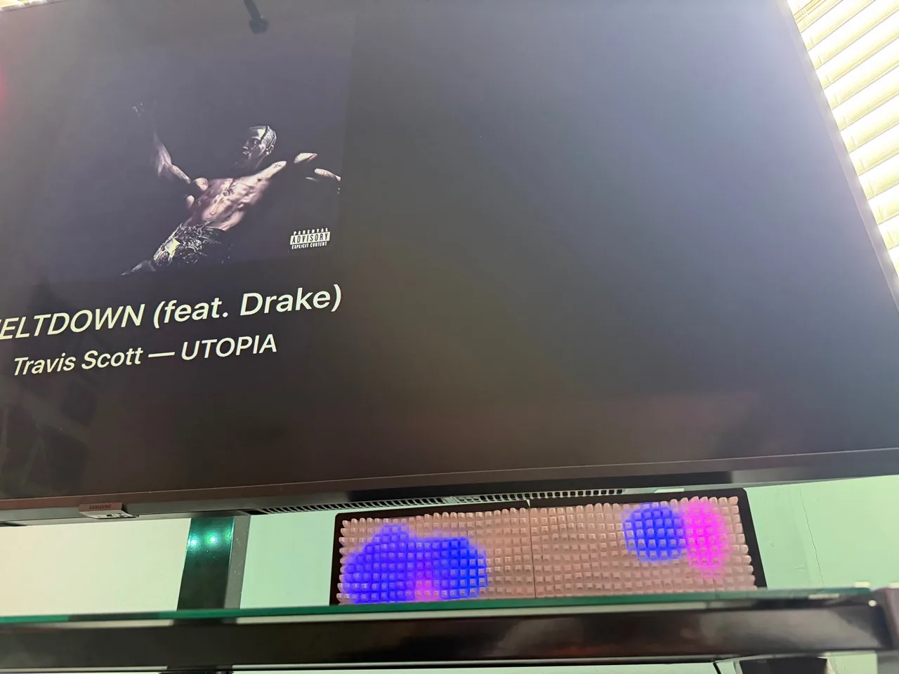

Lab
Home Bar display
A wide 44 × 11 display that wakes when someone walks into the room and shows the song that’s playing, with synced lyrics.
Stage: Testing. Presence sensing and music sync work on the prototype; next is a finished enclosure.
Lab → Custom → Available
I’d want one